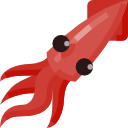
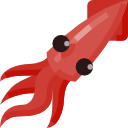
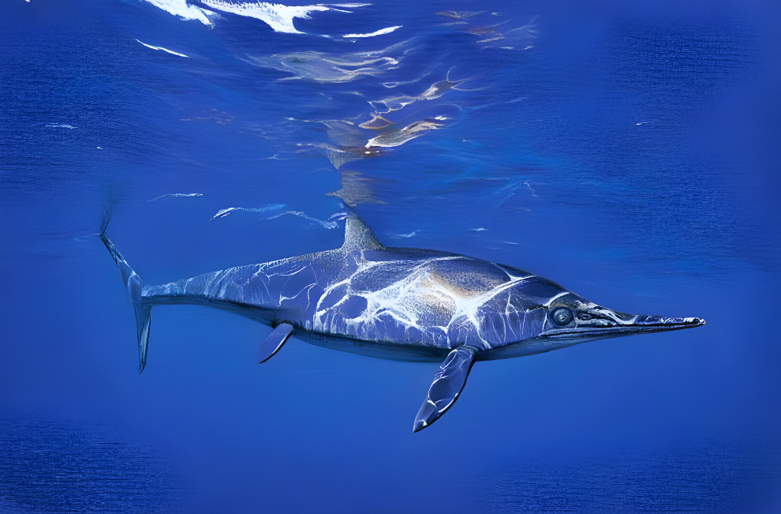

Ichthyosaurus
Ngư Long kỷ Jura
Tổng quan
Kỷ
Jurassic
Họ
Ichthyosauridae
Chi
Ichthyosaurus
Dài
3.3 m
Nặng
91 kg
Thức ăn
 

Ichthyosaurus là một chi của thằn lằn cá từ Kỷ Trias đến đầu Kỷ Jura. Đây là một trong những chi Ichthyizard được biết đến nhiều nhất, vì hầu hết chúng có ngoại hình rất giống cá heo hiện đại.
Nguồn: wikipedia.org
Phân bố
Khu vực biển Châu Âu và Châu Úc
Thông tin thêm về Ichthyosaurus
Kỷ nguyên
Hóa thạch của Ichthyosaurus trải dài gần như toàn bộ Đại Trung sinh (251 triệu đến 65,5 triệu năm trước) nhưng chúng phong phú và đa dạng nhất trong giai đoạn từ Kỷ Trias đến đầu Kỷ Jura, khoảng 251 triệu đến 145,5 triệu năm trước.

Phân bố
Ichthyosaur có sự phân bố địa lý rất rộng và được tìm thấy sống ở nhiều đại dương trên thế giới. Hóa thạch của chúng cho thấy chúng đã bơi từ châu Âu đến châu Đại Dương.
Tên khoa học
Cái tên Ichthyosaurus - "Thằn lằn cá" có nguồn gốc từ Hy Lạp ιχθυς / ichthys có nghĩa là 'cá' và σαυρος / sauros có nghĩa là 'thằn lằn'. Đây là một mô tả khá hay về loài này, mặc dù có hậu tố "Saurus", loài bò sát đã tuyệt chủng này về mặt kỹ thuật không phải là khủng long. Ichthyosaurus là loài nổi tiếng nhất trong một họ bò sát sống ở biển có tên nghe tương tự - Ichthyosauridae.
Kích thước
Một số loài Ichthyosaur hoàn toàn khổng lồ. Một số ước tính cho rằng loài lớn nhất dài 26 mét, tương đương với kích thước của một con cá voi xanh. Tuy vậy, Ichthyosaurus khá nhỏ khi so sánh. Nó chỉ dài khoảng 3.3 mét (11 feet) và nặng khoảng 91 kg.
Ngoại hình
Ichthyosaurus thường được so sánh với cá heo hoặc cá mập. Khi bạn nhìn thấy hình dạng của cơ thể, thật dễ dàng để biết tại sao. Chúng có chiếc mũi nhọn giống cá heo mũi chai và vây đuôi thẳng đứng giống cá mập. Tuy nhiên, chúng không liên quan đến một trong hai. Cá heo là động vật có vú và cá mập là cá. Vì vậy, tại sao cả ba loài có một số tính năng tương tự? Các chuyên gia tin rằng nó được gây ra bởi một thứ gọi là tiến hóa hội tụ. Lý thuyết này giải thích tại sao một số sinh vật không liên quan sống trong cùng một môi trường lại phát triển các tính năng tương tự nhau—chúng chỉ hoạt động rất hiệu quả.
Ichthyosaurus có hình dạng thon dài và thân giữa hơi tròn, không có cổ rõ ràng và phần đầu hòa quyện nhuần nhuyễn vào cơ thể, có 2 bộ vây bơi, và vây đuôi giúp chúng di chuyển nhanh trong nước. Chúng cũng có một chiếc mõm dài, hàm có răng và mắt lớn giúp chúng săn mồi trong đại dương.
Chế độ ăn và săn mồi
Ichthyosaurus là một loài ăn thịt. Chúng thường ăn cá, mực và trong một số trường hợp hiếm hoi, người ta đã tìm thấy hóa thạch của chim và rùa trong dạ dày của Ichthyosaurus.
Những con Ichthyosaurus có xương tai rắn chắc, có nghĩa là chúng dựa vào những rung động từ nước để nghe, một lợi thế thực sự tốt cho việc săn mồi. Chúng có đôi mắt khổng lồ cho phép chúng săn mồi ở những nơi tối tăm trong đại dương nơi những loài ăn thịt khác có lẽ cũng không thể nhìn thấy. Chúng có thể là loài máu nóng và đó là một lợi thế giúp chúng có khả năng lặn sâu để tìm thức ăn.
Khám phá
Mary Anning phát hiện hóa thạch Ichthyosaurus đầu tiên vào đầu những năm 1800. Cô đã phát hiện ra những hóa thạch ở Anh với anh trai mình. Những khám phá của cô ấy rất quan trọng đối với cổ sinh vật học đến nỗi cô ấy có một loài Ichthyosaurus được đặt theo tên của cô ấy là Ichthyosaurus Anningae. Hóa thạch Ichthyosaurus khá phong phú. Chúng phổ biến đến mức khá dễ dàng tìm thấy một số thứ để bán trực tuyến trong thời đại hiện đại của chúng ta.
Các mối đe dọa
Ichthyosaurus có thể đã ở gần đầu chuỗi thức ăn, tuy nhiên điều đó không có nghĩa là chúng không phải lo lắng. Mối đe dọa lớn nhất có thể đơn giản là sự cạnh tranh về nguồn tài nguyên khi các loài cá ăn thịt như cá mập phát triển và trở nên phong phú hơn. Ngoài ra, chúng còn bị tấn công bởi những loài ăn thịt lớn hơn như Liopleurodon cùng thời.
Một số chuyên gia tự hỏi liệu đại dương nóng lên có phải là một phần nguyên nhân dẫn đến sự tuyệt chủng của chúng hay không bằng cách thay đổi nguồn tài nguyên sẵn có hoặc tạo ra môi trường không thể sống sót được cho Ichthyosaurus.